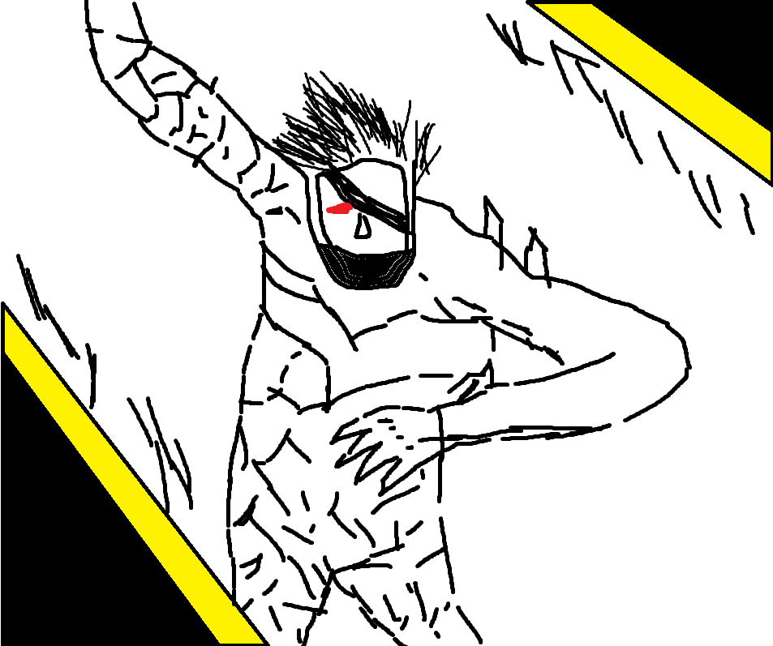
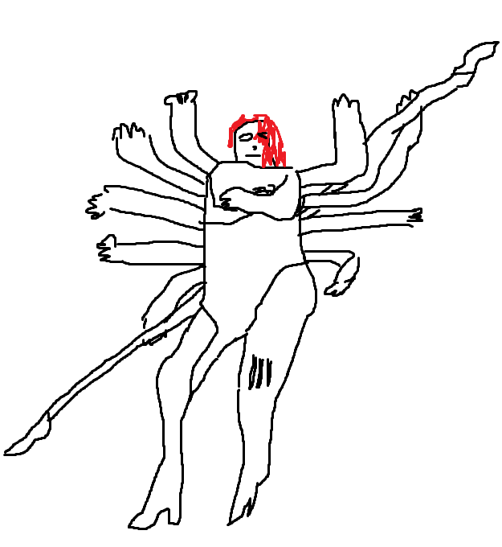
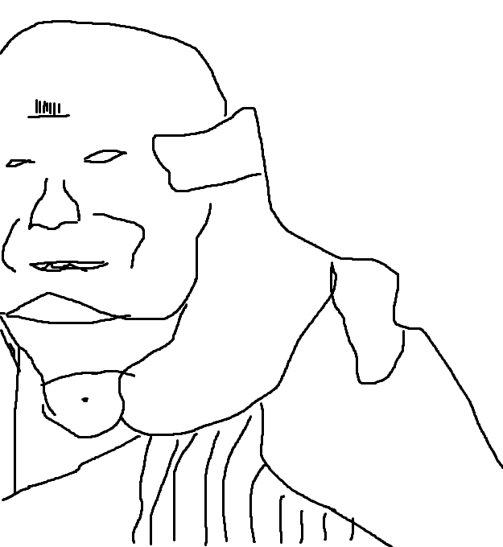
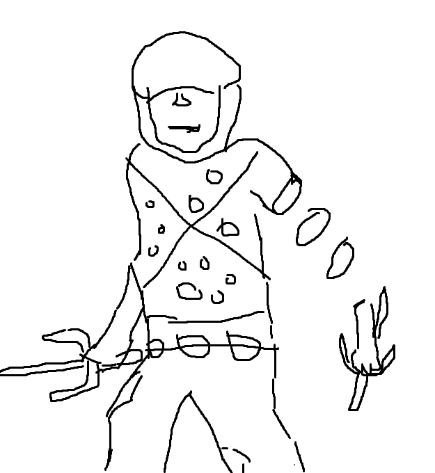
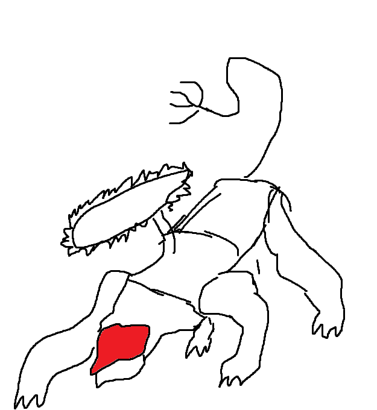
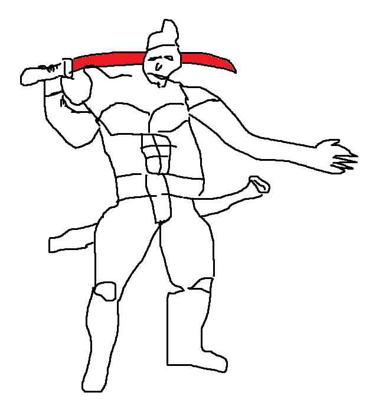

Raiden
All that talk about justice… and here I am, just another killer…

Jack was born on a rainy day in Liberia. During his youth, in the turbulent period that was the First Liberian Civil War, Jack was adopted by Solidus Snake, who named him and became his godfather after he killed the former's parents. Jack was subsequently raised as a child soldier and later fought in the country's Civil War in 1989. He and other children were shown Hollywood action films daily for "image training," and were given food mixed with gunpowder containing toluene to make them more controllable.
Under Solidus, Jack became a killing machine, known alternately as the "White Devil" and "Jack the Ripper" due to his incredibly high kill rate compared to other boys his age, as well as a reference to his being one of the few Caucasians born in Liberia. Armed with a gun at the age of six, he would later remember it as an AK rifle, as well as a knife, he proved to be a superior soldier, rising to become captain of the Small Boy Unit at ten. His skills with a bladed weapon, as well as his cruelty in dispatching enemies with them, was another reason for his "Ripper" nickname.
Mistral
That's when I realized... I am a killer too. And a good one at that

Mistral was a female cyborg mercenary and a member of Desperado Enforcement LLC. Mistral was one of the Winds of Destruction, alongside Sundowner and Monsoon. Her code-name is derived from the dry northern winds that blow from the Alps to the Mediterranean. Mistral used multiple copies of her main weapon called "L'Étranger" (French for "Stranger") in whip and rod configurations and could easily rebuild a new one at ease. Outside of combat operations, she wore a black and violet coat with pauldrons, which she removed in a suggestive manner before engaging her opponent. Mistral's serial number was 977-AZQEE.
Mistral was born to French and Algerian parents in the country of Algeria. She was orphaned at a very early age during the Algerian Civil War in the 1990s. She would eventually find her parents' murderers, and, in her words, "butcher" them. Afterwards, she decided that killing people was her calling, and served in the French Foreign Legion. She participated as a combatant in wars in Iraq and Afghanistan, with a kill count in the dozens. Despite killing being her calling, she found the action itself to be "dull," comparing it to dominoes. She even grew envious of her prey because they had causes to fight for. Eventually, she met a man who changed all that and allowed her to fight for an ideal.
Sundowner
Like I said, kids are cruel, Jack. And I'm very in touch with my inner child!

Sundowner was a cyborg mercenary who served as the de facto leader of the PMSC Desperado Enforcement LLC. during their activities in 2018, as well as a member of the Winds of Destruction, alongside Mistral and Monsoon. His name was derived from the wind condition that occurs in Southern California. Donning a specialized custom cyborg body, the immense Sundowner wielded two high-frequency machetes known as "Bloodlust." In addition, the two machetes could also be merged into a scissors-like contraption to cause further damage to the enemy. His cyborg serial number was 978-AZQEE.
Sundowner was born in Alabama to a poor family. Although he had decent grades throughout school and was described as being a solid student, he never had the money to go to college, so he served in the military instead and participated in the Invasion of Panama, the Gulf War, the Iraq War, and Afghanistan. By 2008, he dropped out of official military service and served as a mercenary for various PMCs up to and during the advent of SOP. He also had a habit of leaving a lot of blood from his enemies, enough to make it look like the sunset, hence why he had the codename "Sundowner." He was also forced out of the battlefield for a few years after being hit with an IED, although he regained participation shortly after gaining a cyborg body. He also ended up investigated by the U.S. Army for links to war crimes more than once, including the desecration of remains, torturing POWs, and causing unethical deaths on the battlefield, although he was never actually convicted.
Monsoon
Free will is a myth, religion is a joke, we are all pawns controlled by something greater: Memes, the DNA of the soul.

Monsoon was a Cyborg Ninja and a member of Desperado Enforcement LLC. He was one of the Winds of Destruction alongside Sundowner and Mistral, and was named after the seasonal wind systems that occur in West Africa and Asia-Australia. Monsoon was capable of magnetically dislocating his entire body to attack from a distance, and wielded Sai weapons called "Dystopia", which were enhanced via magnetic fields. He also seemed to believe that the point of humans was to fight, be consumed with greed and kill, which was based on his childhood in Cambodia. His serial number was 976-AZQEE. He was fluent in Khmer, Chinese, and English. Unlike the other Winds of Destruction, he wasn't a former member of any military or paramilitary organizations prior to enlisting with the group. Instead, he was a former gang member.
Full details on his past are unknown, although he claimed that he inherited his stance on killing people or ending up killed and his nihilistic views from the Cambodian capital city of Phnom Penh and the reign of terror from the Khmer Rouge regime and the Killing Fields between 1975-1979. At some point later, he joined a Cambodian organized crime syndicate, and was rumored to have had involvement in the drug trade and human trafficking. He also mastered the use of sai weapons, and his crime record was extensive enough to far outrank any ordinary gang member. He eventually got cyberneticized with a magnetics-based body after being caught in a gang shootout and mortally wounded. It was at this point that he decided to work with the Delaware-based PMC Desperado, apparently feeling it was much safer to work at a PMC instead of in a crime syndicate.
Blade Wolf
I possess an intellect far beyond human reckoning.

Blade Wolf, or simply Wolf, officially designated IF Prototype LQ-84i (IF standing for "Interface"), is a wolf-like quadrupedal Unmanned Gear with a learning optical neuro-AI and a prototype verbal interface. Known weapons systems included a chainsaw attached to his back that could be used to cut opponents, springloaded HF knives, a rail gun, as well as extendable claws. His tail also acted as a manipulator arm similar to that of the Gekko units. It was once referred to informally as the K-9000 due to its appearance, which also resembled the battle suit of Crying Wolf. Similar unmanned gears called Fenrirs existed as well, apparently being mass-produced models of LQ-84i.
LQ-84i was built as a prototype to a next-generation weapon meant to replace both human combatants and cyborgs. To achieve this, it was deemed necessary to be able to communicate and make intelligent decisions on how to act, hence why he was outfitted with an interface system. During his development, he was outfitted with a learning program, which the researchers, who doubled as his instructors, utilized with an extensive battery of conversations, the nature of which included miscellaneous matters, breakfast-table greetings, the structure of elementary particles, the challenges resulting from rapid globalization, and recent trends in music. Before that, he also was supplied with various website texts and eBooks in a steady stream to acquire literacy.
Jetstream Sam
Oh I see, you deny your weapon its purpose, it yearns to bathe in the blood of your enemies, but you hold it back

Samuel Rodrigues, also known as Jetstream Sam and Minuano, was a cyborg mercenary involved with the Desperado PMC group who fought against Raiden during the events of 2018. He was a Brazilian master swordsman of the "Rodrigues New Shadow School" technique, which had derived from the "Yagyu Shinkage-ryu" (Yagyu New Shadow School) of Japan.
Samuel Rodrigues was descended from a long line of swordsmen, dating back to 16th century Japan. His father ran a Brazilian Kenjutsu dojo, and specifically taught the Uradachi technique, better known as Satsujin-ken or "the murdering sword," which dealt with violence as the end goal. Sam's father was eventually killed by one of his pupils, with one of the drug cartels being rumored to have been involved for reasons and methods unknown, although not before Sam personally inherited his Murasama blade from his father. He then left Brazil, presumably to train, and eventually returned to kill the pupil in question before leaving Brazil permanently.
Senator Armstrong
Nanomachines, son!
Steven Armstrong was a United States Senator representing the U.S. state of Colorado, as well as a candidate for the 2020 United States presidential election. He was also the benefactor for World Marshal Inc., its de facto CEO, and its most powerful warrior. He was also allied with the Winds of Destruction of Desperado Enforcement LLC. An extremely nationalistic, patriotic and libertarian individual, Armstrong often expressed the desire to "reclaim the American dream" by instigating another American Revolution after Liquid Ocelot's insurrection and the Patriots' actions that weakened America.
Armstrong was born and raised in Texas. Prior to pursuing politics, Armstrong played college football as quarterback for the University of Texas. He later joined the United States Navy due to a desire to serve his country, which also sacrificed his prospects of a professional football career. However, although a member of the Navy, he never saw actual combat during his time in the service. At some point, he moved to Colorado. By the time of 2016, he maintained his physique and even managed to enhance it further via nanomachines in order to put his strength beyond a cyborg soldier.